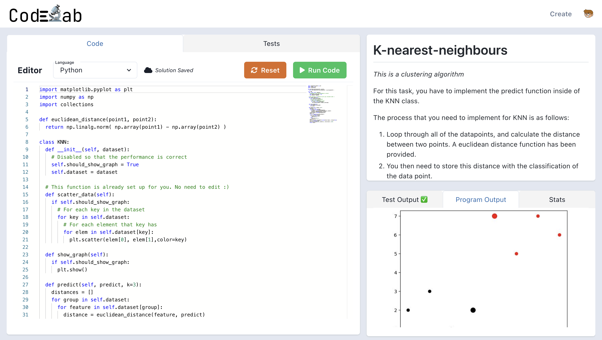
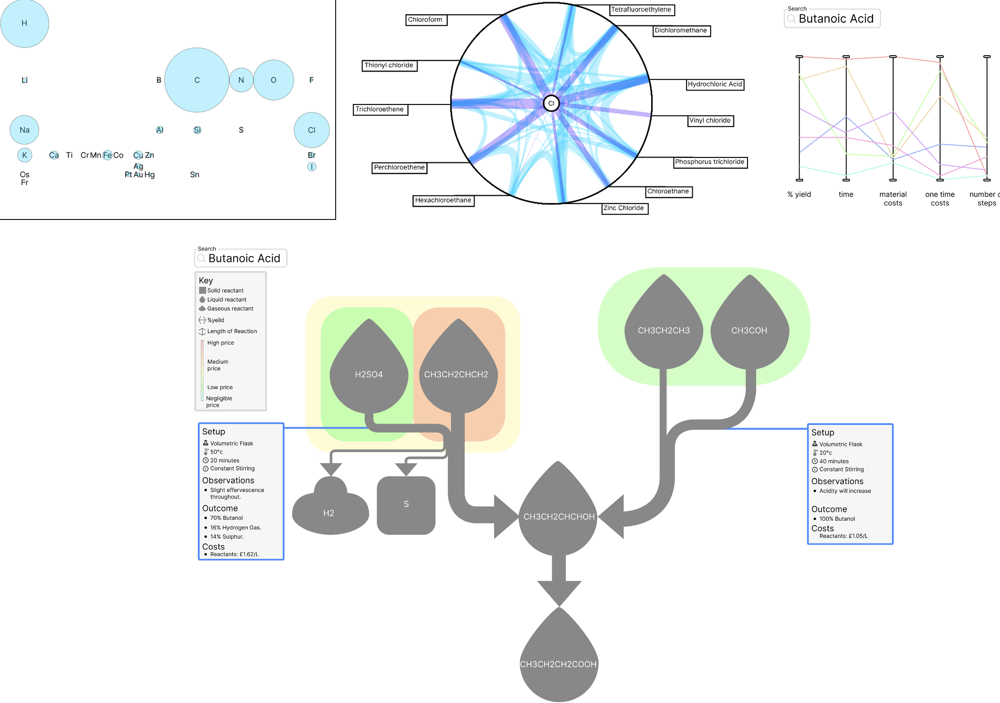
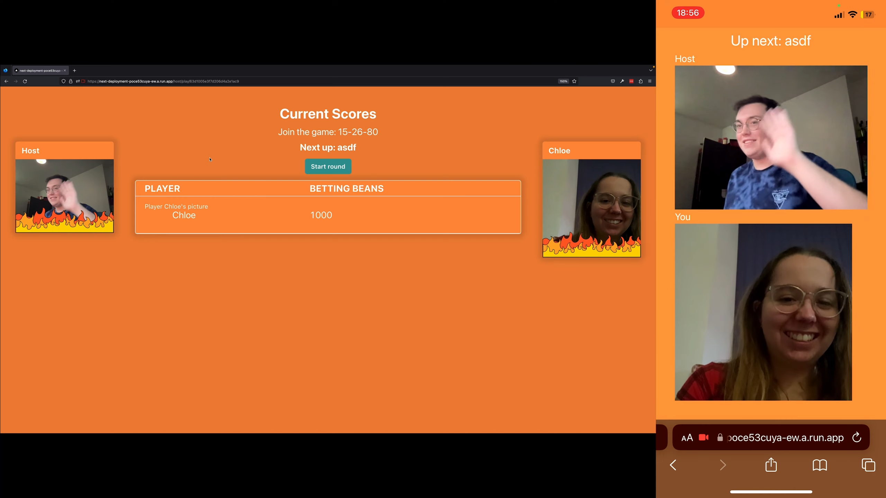
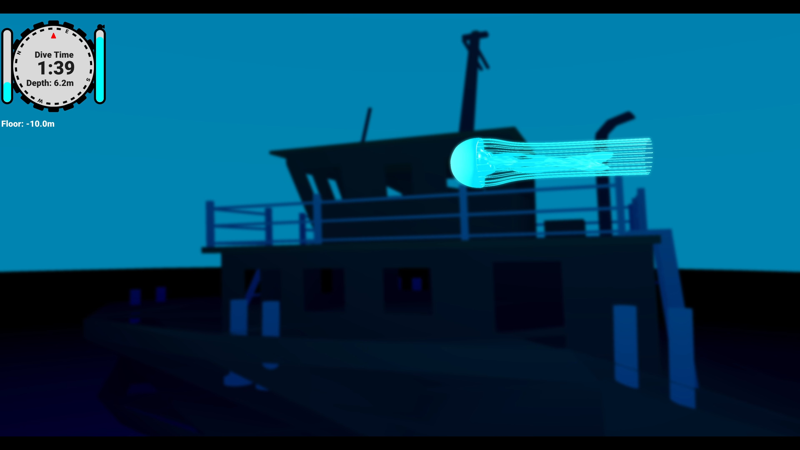

Project Timeline
Dissertation project
May 2023
My dissertation focused on developing an online teaching platform that enhances existing platforms, such as leetcode and hackerrank, intending to cater to higher-education institutions.
I contributed significantly to developing a remote code execution engine that can scale using docker, AWS, and Kubernetes. I conducted several usability studies to ensure that the interface was user-friendly.
React
TypeScript
Kotlin
Rust
RabbitMQ
Kubernetes
PostgreSQL
Redis
AWS
Data Vis Research
May 2023
I wrote a research paper proposing innovative approaches to visualise a dataset for the Human-Computer-Interaction module. I performed in-depth research on the latest techniques for the data type and merged them with my fresh visualisation ideas. I then crafted high-quality mockups and ran a study to determine each visualisation's efficacy.
This project showcases four representations of the open-reaction database. The first visualisation offers a comprehensive dataset overview, enabling users to quickly determine its suitability. The second visualisation filters reactions by a single element, displaying their connections on a hyperbolic browser. Parallel coordinates are employed to compare a set of reactions with the same product. Lastly, a modified reaction path analysis diagram is combined with a heatmap to compare a small number of paths, providing insightful and nuanced analysis.
Figma
Web-based multiplayer game
January 2023
This module involves building a website using JavaScript for the full stack, MongoDB for the database, and web sockets for real-time communication. In my project, I developed a trial game where a game master creates a series of trials that are either time-based or fastest to complete. Users bid on competing in the trial, with the top-two bidders being selected to compete. Other users can bet on who they believe will win the trial. The winners then play out the trial, with the winner receiving all the beans. Upon joining the game, users can upload profile pictures, and distributed users can participate through a video call using WebRTC.
React
TypeScript
NextJS
Socket.IO
WebRTC
MongoDB
SCUBA Simulator
January 2023
I successfully developed a game using C++ and the OpenGL framework, which included a custom OBJ and GLTF model loader. Unlike most underwater games that use unrealistic blur filters to create an underwater effect, I utilized shaders to create more realistic lighting effects. By adding a depth-of-field effect that blurs objects farther away from the camera and a lighting shader that changes the colour of objects based on their distance from the player - red light only penetrates 5m, green 25m, and blue 35m. These effects created a more immersive experience. As a result of my exceptional work, this project received a perfect score of 100%.
A technical break-down of the effects can be seen on GitHub
C++
OpenGL
Software Development Placement GOSS Interactive
June 2021 - July 2022
During my time at GOSS, I successfully collaborated with the creative design and CMS platform teams to extract article data from the database and present it on a website that is mobile-friendly, highly accessible and user-friendly. My primary responsibility was to create unique article templates in a client-facing capacity. I guided clients through identifying their needs, handed off the requirements to the design team for mockup creation, and completed the development process.
During my work experience, I contributed to back-end projects. This involved developing and troubleshooting workflows within a node.js microservice. These workflows occur after a form is submitted, for example, automatically creating a new article about a local event after a council member has approved it.
While I was coming up to speed with the GOSS platform, my responsibility was to develop new features for its framework. One of the noteworthy features I created was an upgraded tool for SEO. This involved generating JSON-LD objects to enhance search rankings and enable web pages to use Google rich results.
C#
MSSQL Server
Interface Design Microinternship
April 2021 - May 2021
I completed a brief project to create an information dashboard system that displays the status of a network of security boxes in a user-friendly way. The system had to be compatible with a small 7-inch monitor and easily adaptable for international use.
Figma